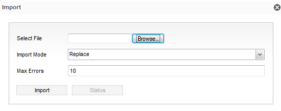

You can import codes tables in one of the following methods:
You can import code tables from XML and ZIP files.

| Field | Description |
|---|---|
| Select File | Click the Browse button and specify the file containing the code tables. You can import code tables from XML and ZIP files. Note: Only a ZIP file created through the export option can be imported; you can not import custom ZIP files. |
| Import Mode | By default, this field is set to Replace, indicating that if the code tables exist, this import action replaces them. Otherwise, click the drop-down menu and select from the following options:
|
| Max Errors | This field defaults to 10, indicating that up to ten errors are ignored when importing the code tables. If the number of errors during the import exceeds the number set in this field, the import action stops and a message occurs, indicating that the action has failed. |
You can import a code table from the command line in Windows and Unix. The catalog import syntax is as follows:
catalogImport username=a password=b server_url=http://localhost:8080/cwf import_file=C:\tickets\ACC_CAN_TYPE.xml import_codetable=true log_general_info=false import_domains=false
The following is an example is as of using this command: